1. Plazos definidos
Fija plazos concretos para cada etapa: recepción, medidas de protección, investigación y resolución.
Fundamento: LGAMVLV · Belém do Pará
Observatorio
Evaluamos el diseño y la eficacia de los protocolos universitarios de atención a la violencia. No evaluamos personas: auditamos las reglas del juego.
Las universidades públicas respondieron a la exigencia estudiantil redactando protocolos. La existencia de un documento no garantiza el acceso a la justicia ni erradica la violencia institucional.
Nuestra matriz contrasta los reglamentos internos contra estándares normativos ineludibles:
También rastreamos la hemeroteca para documentar cómo responden en la práctica, y así evidenciar la brecha entre el papel y lo que ocurre.
«La impunidad no es un accidente del sistema: suele ser el resultado exacto de su diseño burocrático.»
Primera fase: registro hemerográfico de casos documentados en instituciones de distintos regímenes jurídicos — autónomas federales, estatales, federales sectorizadas y centros públicos.
Segunda fase, en curso: evaluación de cada protocolo contra la matriz de estándares.
Explorar el índiceInstituciones
Cada universidad, su régimen jurídico y el estado de su evaluación. Filtra por tipo de institución o busca la tuya.
Universidad Nacional Autónoma de México

Universidad Autónoma Metropolitana

Univ. Autónoma de la Ciudad de México

Universidad Autónoma de Nuevo León

Universidad de Guadalajara
Benemérita Univ. Autónoma de Puebla
Universidad Veracruzana
Univ. Autónoma del Estado de México

Univ. Autónoma del Estado de Morelos

Univ. Autónoma de Baja California
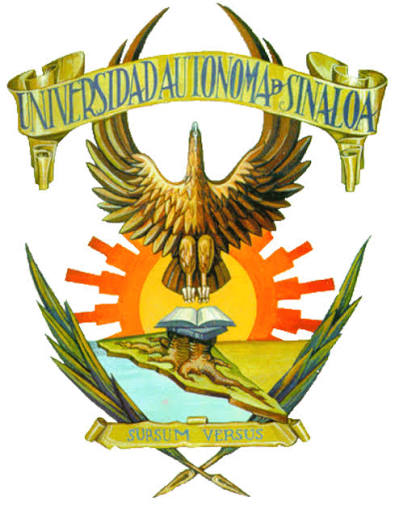
Universidad Autónoma de Sinaloa
Universidad de Guanajuato

Universidad Autónoma de Yucatán

Universidad Autónoma de Chiapas
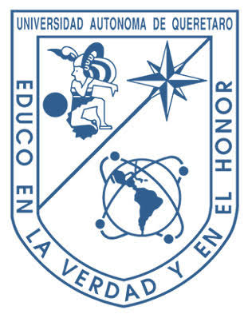
Universidad Autónoma de Querétaro
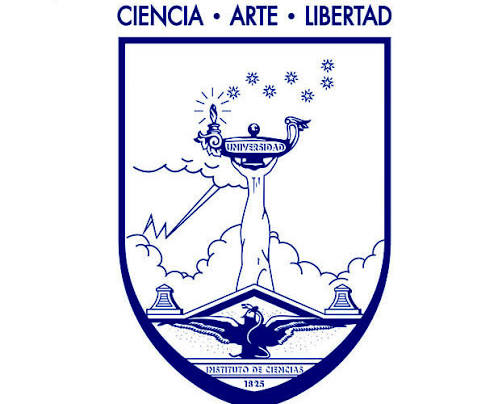
Univ. Autónoma "Benito Juárez" de Oaxaca
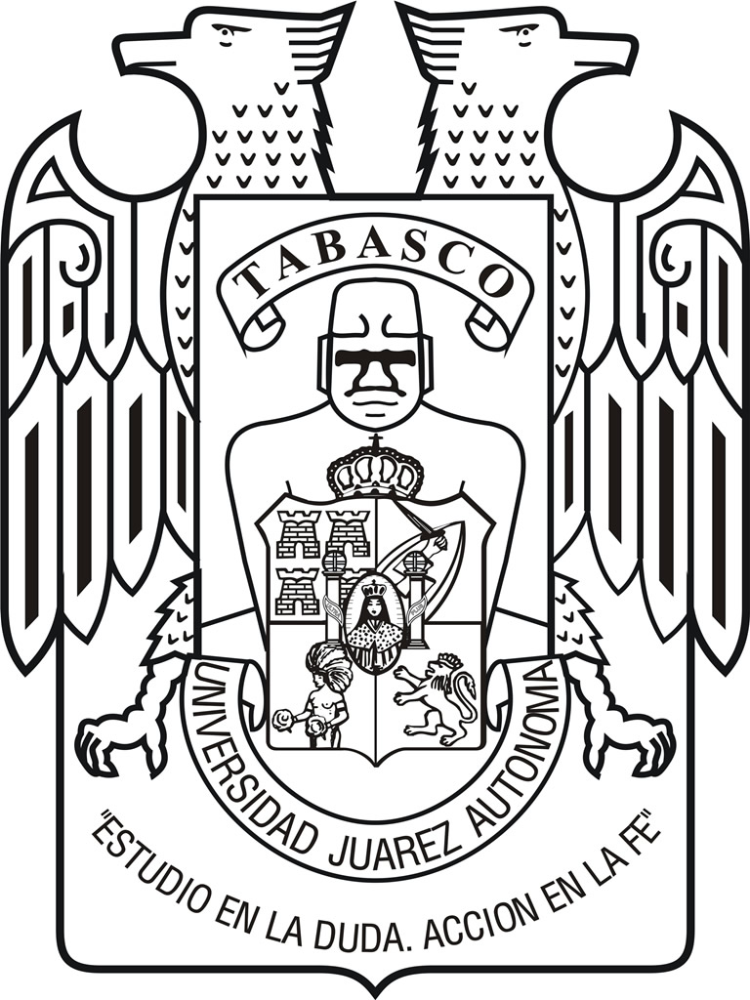
Universidad Juárez Autónoma de Tabasco
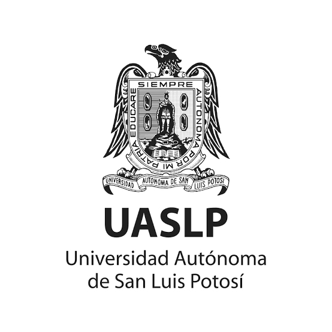
Univ. Autónoma de San Luis Potosí

Universidad Autónoma de Chihuahua

Univ. Michoacana de San Nicolás de Hidalgo
Universidad Autónoma de Coahuila
Universidad de Sonora

Universidad Autónoma de Guerrero

Universidad Autónoma de Aguascalientes

Universidad Autónoma de Zacatecas
Univ. Juárez del Estado de Durango
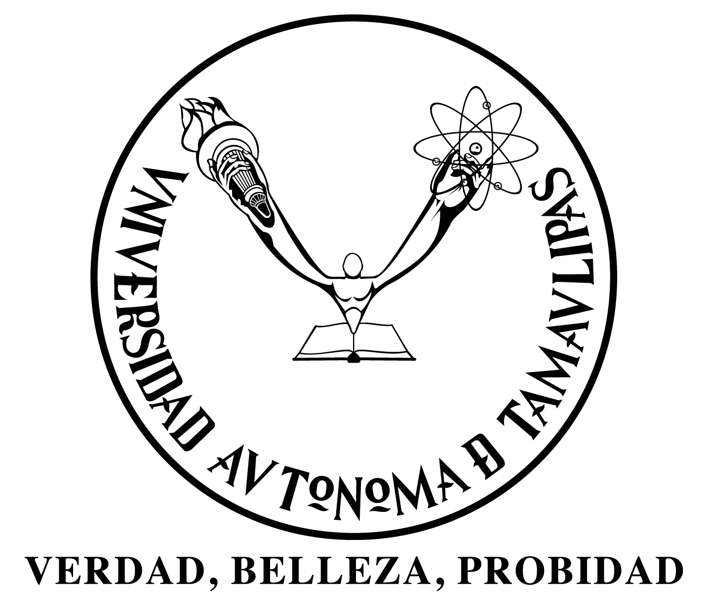
Universidad Autónoma de Tamaulipas

Univ. Autónoma del Estado de Hidalgo
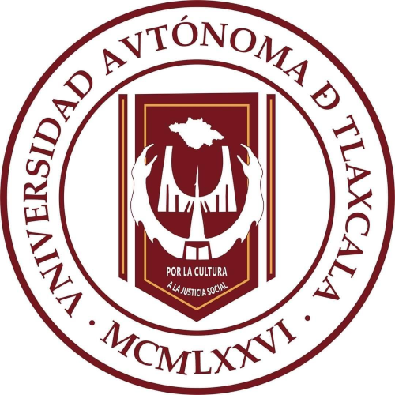
Universidad Autónoma de Tlaxcala

Universidad Autónoma de Nayarit
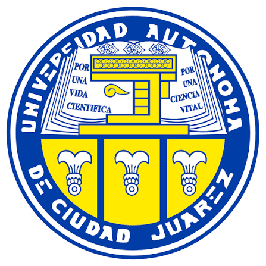
Univ. Autónoma de Ciudad Juárez

Universidad de Colima
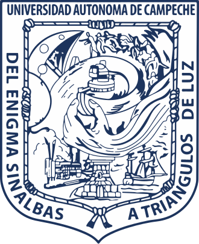
Universidad Autónoma de Campeche
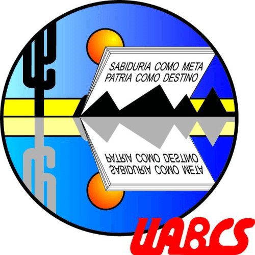
Univ. Autónoma de Baja California Sur

Universidad Autónoma del Carmen
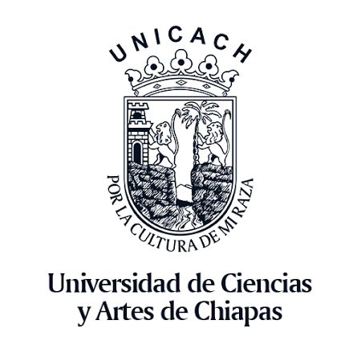
Univ. de Ciencias y Artes de Chiapas
Instituto Politécnico Nacional (Dependiente SEP)
Universidad de Quintana Roo
Universidad Intercultural de Chiapas

Instituto Tecnológico Superior de Poza Rica

TecNM Gustavo A. Madero II (CDMX)

Univ. Benito Juárez (Papantla, Ver.)
Intenta buscar por otro término o navega entre las categorías. Si deseas enviar información sobre tu universidad para evaluación, escríbenos por correo.
Enviar documentación por correoEl Observatorio se alimenta de testimonios, expedientes de quejas, solicitudes de transparencia y análisis directo de asambleas estudiantiles. Envía tu testimonio o la documentación de tu campus de manera segura.
Enviar testimonio a cosiendo.tus.alas@gmail.comMétodo, criterios y mecanismos de corrección, publicados antes que los resultados.
¿Qué distancia existe entre las obligaciones normativas que vinculan a una universidad, lo que su protocolo efectivamente prevé y lo que la evidencia pública muestra sobre su funcionamiento?
La pregunta está formulada para admitir un resultado negativo. Si una institución resulta bien evaluada, eso también es un hallazgo, y publicarlo es lo que da credibilidad al resto.
Separamos deliberadamente dos cosas que suelen mezclarse:
Las noticias sobrerrepresentan a las universidades grandes, urbanas y con prensa o colectivas activas. Que no existan notas sobre una institución no significa que su protocolo funcione. Puede significar silencio, y el silencio no se evalúa como cumplimiento.
Cuando no hemos podido revisar un indicador, se marca como no evaluado y no cuenta en contra. Si la cobertura de la matriz es insuficiente, la institución aparece como evaluación incompleta y no recibe calificación.
El objeto es el diseño normativo y la respuesta institucional. No emitimos juicios sobre la responsabilidad de individuos.
Ningún hallazgo descansa en una sola fuente. Un indicio hemerográfico se contrasta contra el texto del protocolo y, cuando es posible, contra la respuesta oficial a una solicitud de información.
Cada ficha lleva fecha de revisión. Las correcciones se publican con constancia del cambio. El derecho de réplica está abierto de forma permanente.
Si una institución evaluada contrató trabajo con el proyecto, su ficha lo indica de forma visible y su actualización la revisa una persona o equipo ajeno a ese servicio. Ningún contrato cambia, retrasa ni retira una ficha. Las reglas de separación son públicas.
Definir y publicar el universo exacto de la primera etapa, el periodo hemerográfico cubierto y el libro de códigos completo.
Cada indicador recibe uno de cuatro estados, siempre acompañado de la cita del artículo que lo respalda:
PENDIENTE: fijar y justificar los porcentajes que separan cada nivel, y la cobertura mínima de la matriz por debajo de la cual una institución aparece como evaluación incompleta y no recibe calificación. Es una decisión metodológica y debe publicarse argumentada.
Fija plazos concretos para cada etapa: recepción, medidas de protección, investigación y resolución.
Fundamento: LGAMVLV · Belém do Pará
Prevé medidas cautelares desde la denuncia, sin exigir prueba previa.
Fundamento: LGAMVLV · CEDAW RG 36
Quien investiga y resuelve no depende jerárquicamente de la persona señalada ni de su unidad.
Fundamento: LGES · Belém do Pará
No impone ni promueve mediación entre la persona denunciante y la señalada.
Fundamento: LGAMVLV · Belém do Pará
No exige coherencia perfecta ni evalúa la conducta previa o la vida sexual de quien denuncia.
Fundamento: CEDAW RG 33 y 35 · Belém do Pará
Protege la identidad y los datos de quien denuncia durante y después del procedimiento.
Fundamento: LGAMVLV · normativa de datos personales
Contempla medidas de reparación y garantías de no repetición, no solo la sanción.
Fundamento: LGAMVLV · Ley General de Víctimas
Prohíbe y sanciona expresamente las represalias académicas contra quien denuncia o testifica.
Fundamento: LGES · CEDAW RG 35
Ofrece acompañamiento psicológico y orientación jurídica gratuitos.
Fundamento: LGAMVLV · Ley General de Víctimas
El protocolo es de fácil acceso y la institución publica estadísticas de casos.
Fundamento: Ley de transparencia · LGES
Esta sección se abrirá al cerrar la segunda fase del diagnóstico. No publicar la página con contenido de relleno: si no hay informes, es preferible decirlo.
Informes consolidados en PDF, cada uno con fecha, versión y ficha de cita académica. La metodología y los datos que los sustentan estarán siempre accesibles desde el propio informe.
EDITAR: definir el formato de cita sugerido una vez exista el primer informe. Si se tramita ISBN o DOI, indicarlo aquí.
Los datos se abrirán junto con el primer informe. Antes de publicarlos, revisar que ningún registro permita identificar a personas.
EDITAR: definir la licencia. Una licencia abierta con atribución es coherente con el proyecto y facilita que otras personas repliquen el análisis.
Los registros marcados como no evaluados indican ausencia de revisión, no incumplimiento. Cualquier análisis que los trate como ceros distorsiona los resultados.
Toda institución mencionada en el Observatorio puede responder. La réplica se publica junto a la ficha, sin edición de su contenido.
EDITAR: fijar y declarar el plazo de respuesta. Un compromiso público de días hábiles es más creíble que una fórmula vaga.
No es una vía para solicitar la retirada de información documentada ni para condicionar la publicación de hallazgos. Es un mecanismo de contradicción, no de veto.
Tampoco es una consultoría, y es gratuito. Contratar trabajo con el proyecto no modifica una ficha: ver las reglas de separación.